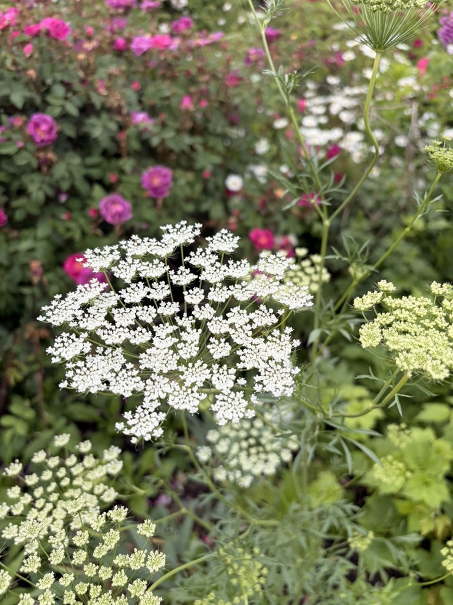
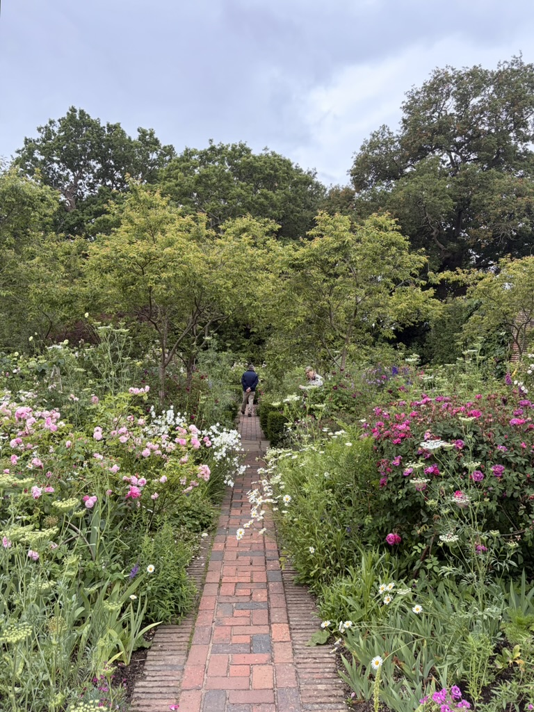
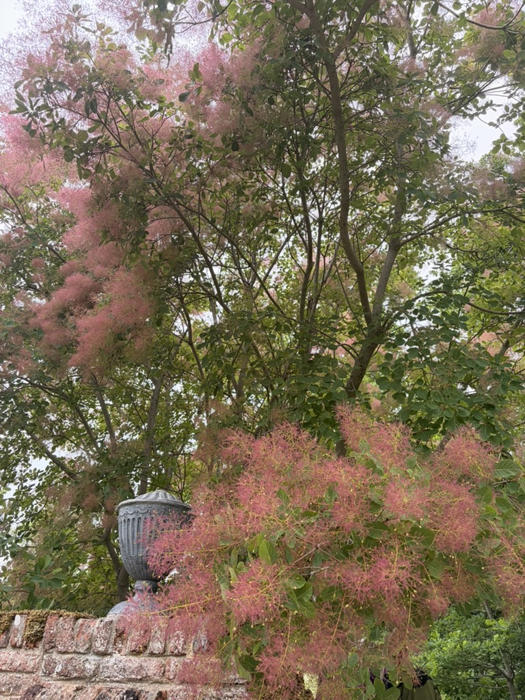
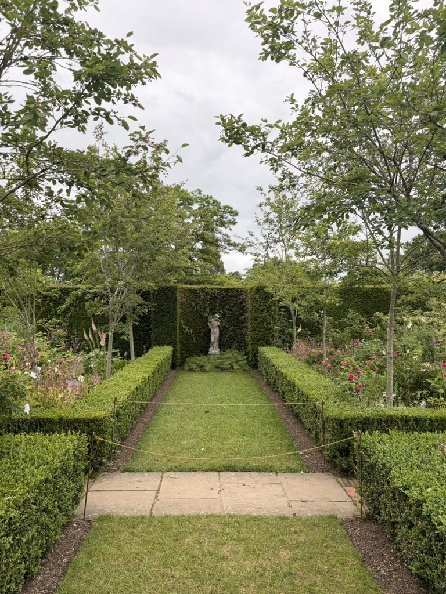
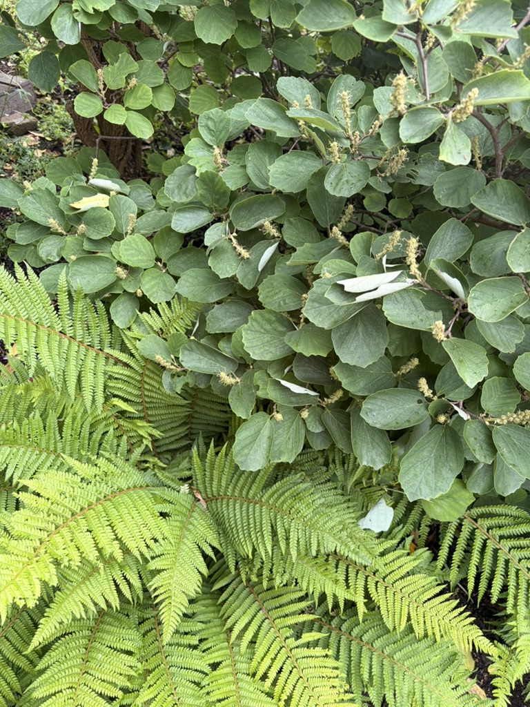

A view of the house when walking through the orchard.

Bullwort

The Rose Garden

Smokebush, beautifuil

The Rondel

Ferns and Fothergilla(?) make a nice combinationI like taking a picture of a close-up mixture of plants more than more grand. It's nice to see exactly what works well within a garden.